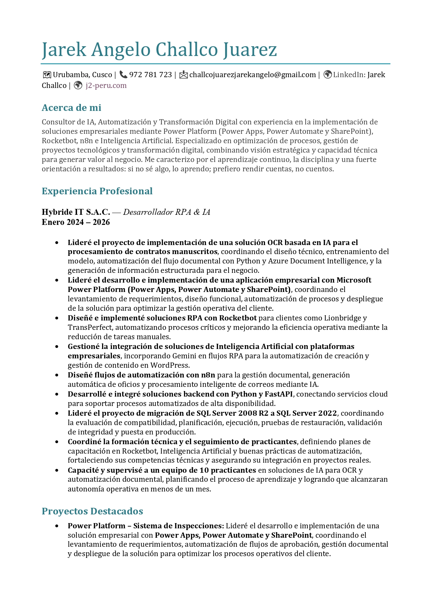

Gestión de Proyectos · IA · Automatización · Power Platform
Lidero proyectos tecnológicos que transforman procesos en resultados para el negocio.
Gestiono e implemento proyectos de IA, RPA y Microsoft Power Platform, desde el levantamiento de requerimientos hasta el despliegue y seguimiento de la solución. Mi enfoque combina visión estratégica, liderazgo y capacidad técnica para optimizar procesos y generar valor real para el negocio.
He participado en proyectos nacionales e internacionales, coordinando equipos, clientes y soluciones tecnológicas basadas en Power Apps, Power Automate, SharePoint, RPA, bases de datos, servicios cloud e Inteligencia Artificial.

Una trayectoria orientada a resultados
Mi experiencia combina gestión de proyectos, liderazgo y conocimiento técnico. He evolucionado desde la automatización de tareas hasta la coordinación e implementación de soluciones empresariales orientadas a mejorar procesos, reducir riesgos y generar resultados sostenibles.
Formación en Ingeniería en Ciberseguridad. Bases sólidas en redes, análisis técnico y automatización de tareas seguras.
Primeros proyectos de automatización con RPA y Python. Desarrollo de scripts orientados a optimizar procesos operativos y reducir carga manual.
Implementación de soluciones con OCR e integración de APIs. Inicio de proyectos que combinan automatización con procesamiento inteligente de datos.
Desarrollo profesional como RPA & IA Developer en entorno empresarial. Implementación de bots con Rocketbot, ETL en Python, integración con Azure Document Intelligence y migración de SQL Server 2008 R2 a 2022.
Liderazgo e implementación de proyectos tecnológicos con Power Apps, Power Automate, SharePoint, RPA e Inteligencia Artificial. Coordinación de requerimientos, equipos, automatizaciones y despliegues con enfoque en eficiencia operativa y valor para el negocio.
Cómo puedo ayudar a tu empresa
Pienso en cada proyecto como en una arquitectura: estrategia, capas claras, responsabilidades definidas y un resultado medible. Estas son algunas de las formas en las que aporto valor:
Automatización Inteligente
Diseño y despliego flujos con Selenium, Rocketbot y n8n para que procesos manuales, repetitivos y sensibles al error se vuelvan confiables, rápidos y auditables.
IA aplicada a negocio
Implemento asistentes con LLMs, OCR y búsqueda semántica que responden sobre tu propia información: normativa, documentos internos, reportes, correos y más.
Arquitectura & Integraciones
Construyo APIs con FastAPI, integraciones por Webhooks y pipelines que conectan Excel, OneDrive, bases de datos y servicios en la nube en un flujo lógico y mantenible.
Herramientas y paneles a medida
Desarrollo herramientas internas, dashboards ligeros y paneles de control para que tu equipo tenga una interfaz clara sobre la automatización que ocurre detrás.
Power Platform & Gestión de Procesos
Lidero el diseño e implementación de soluciones empresariales con Power Apps, Power Automate y SharePoint, desde el levantamiento de requerimientos hasta el despliegue, seguimiento y mejora continua.
Stack y tecnologías que utilizo
No se trata de usar todo, sino de elegir lo correcto para cada caso. Este es el stack con el que construyo soluciones end-to-end:
Herramientas que he construido
Además de proyectos corporativos, desarrollo utilidades que resuelven problemas concretos del día a día. Algunas de ellas:
WhatsApp Link Generator
Genera enlaces limpios y personalizados para campañas y atención al cliente.
QR Maker Pro
Códigos QR listos para tu negocio, materiales físicos o eventos.
Random Sorteos
Sorteos transparentes para dinámicas internas, premios o campañas.
Fotos DNI A4
Generador profesional para imprimir fotos con medidas exactas en hoja A4.
Proyectos destacados
Cada uno de estos proyectos refleja un enfoque: automatizar, ordenar y hacer visible lo que antes era manual, disperso o frágil.
AntiCaptcha API privada
Sistema OCR híbrido con Tesseract, EasyOCR, TrOCR y fallback en modelos de IA. Expuesto como API privada con autenticación y pensado para integrarse con bots y automatizaciones.
- Pipeline híbrido IA + OCR tradicional
- Control de uso y logs de ejecución
- Diseñado para consumir desde RPA y microservicios
Sistema de Inspecciones 5S con Power Platform
Liderazgo del desarrollo e implementación de una solución empresarial para gestionar inspecciones, evidencias, responsables, correcciones y aprobaciones mediante Microsoft Power Platform.
- Levantamiento y análisis de requerimientos del negocio
- Aplicación desarrollada con Power Apps y SharePoint Online
- Automatización de notificaciones y flujos con Power Automate
- Coordinación de pruebas, despliegue, capacitación y seguimiento
Chatbot tributario con IA
Asistente entrenado con normativa tributaria y fuentes oficiales. Permite consultas naturales y se integra con automatizaciones que obtienen datos de entidades externas.
- Buscador semántico + modelo de lenguaje
- Capas para actualizar información de forma segura
- Respuestas trazables y auditables
ETL de Excel en la nube
Proceso automático que toma archivos de OneDrive, los normaliza, migra a una base de datos y alimenta dashboards de BI sin intervención manual.
- Carga incremental y control de duplicados
- Validación de datos y manejo de errores
- Actualizaciones programadas para reporting
Automatización multiplataforma
Robots UI para plataformas sin API oficial, operando con precisión y estabilidad flujos sensibles a error humano.
- Manejo de múltiples sesiones y estados
- Reportes de ejecución para el equipo
- Diseñados para correr en segundo plano
OCR inteligente y procesamiento de documentos
Sistema avanzado de reconocimiento de texto con múltiples motores y validación automática para documentos complejos y de baja calidad.
- Uso combinado de modelos IA & Python
- Normalización, limpieza y extracción estructurada
- API privada para consumo interno y automatizaciones
Migración automatizada de datos
Proceso de migracion de base de datos SQL 2008 R2 a SQL 2022, dejando la información organizada, incremental y lista para análisis.
- Normalizacion de datos
- Carga incremental
- control de versiones de los datos
Automatización de flujos con n8n
Orquestación inteligente de procesos repetitivos críticos, conectando sistemas, enviando alertas y ejecutando tareas de forma totalmente autónoma.
- Integración de fuentes internas y externas
- Alertas automáticas basadas en cambios y eventos
- Reducción del tiempo operativo y errores manuales
Certificaciones
Certificaciones que respaldan mis competencias en gestión de proyectos, automatización, Inteligencia Artificial, RPA, ciberseguridad y transformación digital.
Currículum Profesional
Perfil profesional con experiencia en gestión de proyectos tecnológicos, liderazgo, automatización, Inteligencia Artificial y Microsoft Power Platform.

Proyectos de mi GitHub
Repositorios recientes, ordenados por relevancia, tecnología y actividad real.
Convirtamos tus procesos en proyectos que generen resultados.
Si buscas implementar una solución de automatización, Inteligencia Artificial o Power Platform, puedo ayudarte a gestionar el proyecto desde el análisis inicial hasta su despliegue. Con planificación clara, comunicación constante y resultados medibles.